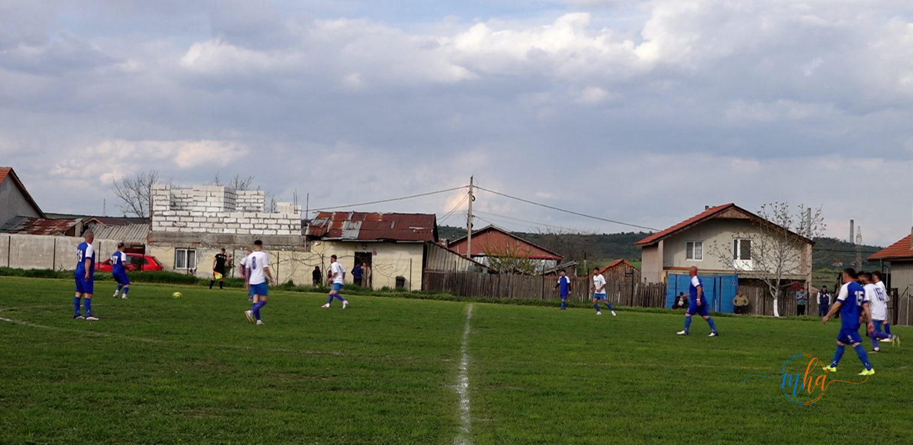
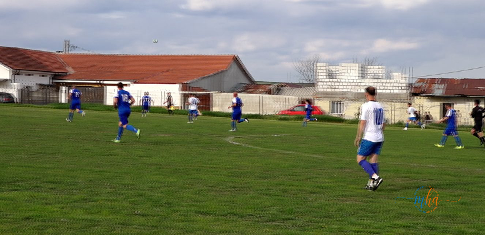

Etapa a 18-a din Liga a IV-a Mehedinți a adus un nou succes important pentru CS Sănătatea Breznița Ocol, care s-a impus fără drept de apel în fața formației CS Pandurii Cerneți, scor 4-1. Partida, disputată vineri, 10 aprilie 2026, pe terenul Magheru, a fost una spectaculoasă, cu faze de poartă, ritm bun de joc și o prestație solidă din partea gazdelor.
🤝 Moment de reculegere pentru Mircea Lucescu
Un moment emoționant a avut loc chiar înainte de startul partidei, când jucătorii, staff-urile tehnice și spectatorii au ținut un moment de reculegere în memoria marelui antrenor Mircea Lucescu, în semn de respect pentru contribuția sa uriașă la fotbalul românesc.
⚽ Cum s-a desfășurat meciul
Încă din primele minute, CS Sănătatea Breznița Ocol a preluat inițiativa, dominând jocul și impunând un ritm alert. Eficiența ofensivă s-a văzut rapid pe tabelă, iar la pauză scorul era 3-1 în favoarea gazdelor, care și-au demonstrat superioritatea în prima repriză.
Un 4-1 care vorbește de la sine — CS Sănătatea Breznița Ocol a controlat meciul de la primul până la ultimul minut, sub comanda antrenorului Gigi Gorun.
În repriza secundă, gazdele au gestionat inteligent jocul, menținând posesia și limitând acțiunile ofensive ale adversarilor. Chiar dacă CS Pandurii Cerneți a încercat să revină în joc, defensiva echipei din Breznița Ocol s-a ridicat la înălțime, iar scorul final de 4-1 a confirmat diferența de valoare din teren.
⚽ Marcatorii CS Sănătatea Breznița Ocol

🏆 Organizare, disciplină și lider de echipă
Sub coordonarea antrenorului Gigi Gorun, echipa a arătat organizare, disciplină tactică și eficiență în fața porții. De asemenea, căpitanul Relu Valentin Țurai a avut o contribuție importantă în mobilizarea echipei și în menținerea echilibrului pe parcursul întregii partide.
Victoria din această etapă consolidează poziția CS Sănătatea Breznița Ocol în clasament și confirmă forma excelentă a echipei, care privește cu încredere către următoarele confruntări din Liga a IV-a Mehedinți.
📺 Unde poate fi urmărit meciul?
Pentru cei care doresc să revadă partida, înregistrarea este disponibilă pe pagina de Facebook Mehedinți Azi, locul unde sunt transmise frecvent meciuri și evenimente din sportul local.
CS Sănătatea Breznița Ocol continuă să impresioneze în Liga a IV-a Mehedinți, oferind suporterilor rezultate și spectacol.
Redactia MehedintiAzi.ro